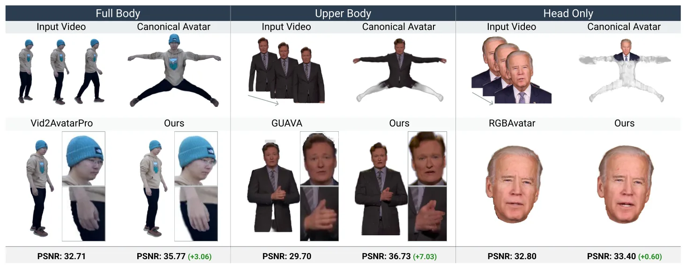
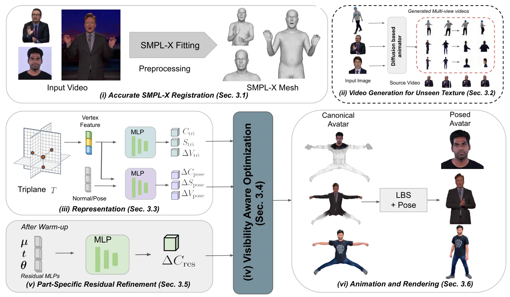
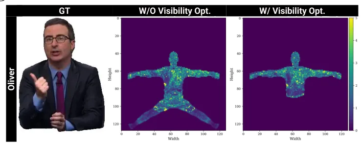

FlexiAvatar：任意身体可见范围下的统一 3D Gaussian 人体 AvatarFlexiAvatar: Unified 3D Gaussian Human Avatars Under Arbitrary Body Visibility
遮挡下选择性优化值得对象重建参考，但属于人体 Avatar，扩散补全也不保证测量真实性。
一句话工作总结
按可见身体区域选择性优化 3D Gaussian Avatar，并以扩散模型补全完全未观测区域。
摘要
FlexiAvatar 从单目视频重建可动画 3D 人体，只优化真实可见身体区域，避免未观测肢体损害可见区域质量。方法结合遮挡鲁棒 SMPL-X tracking 与分部 residual refinement 捕获高频几何和外观，并用 diffusion 补全完全不可见区域。在多个全身、半身和头部数据集上，平均 PSNR 约提高 3%；局部可见情形下还减少需要优化和渲染的 Gaussian 数量。
Reconstructing animatable 3D human avatars from monocular video is a fundamental problem in computer vision with broad applications in AR/VR and digital content creation. Existing approaches typically couple parametric body models with neural rendering or 3D Gaussian splatting and optimize all body regions jointly from short videos, which often degrades fidelity in the visible areas. To overcome this limitation, we introduce FlexiAvatar, a unified framework that explicitly optimizes only the visible body regions, effectively eliminating artifacts arising from unobserved limbs. Our method integrates occlusion-robust SMPL-X tracking with part-specific residual refinement to capture high-frequency geometric and appearance details. To complete entirely unseen regions (e.g., back views), we leverage a diffusion-based approach to generate texture consistent with the observed appearance. Experiments on full-body (NeuMan, ZJU-MoCap, WildAvatar), upper/half-body (talk-show clips), and head-only (INSTA) inputs show that FlexiAvatar delivers consistently higher reconstruction quality, outperforming state-of-the-art methods by an average PSNR improvement of approximately 3% across datasets. Finally, by restricting optimization to observed regions, our method reduces the effective number of Gaussians that must be optimized and rendered, leading to reduced runtime and memory overhead in partial-visibility scenarios.
中文解读摘录
图表/页面预览
{kind=link}

{kind=link}

{kind=link}
